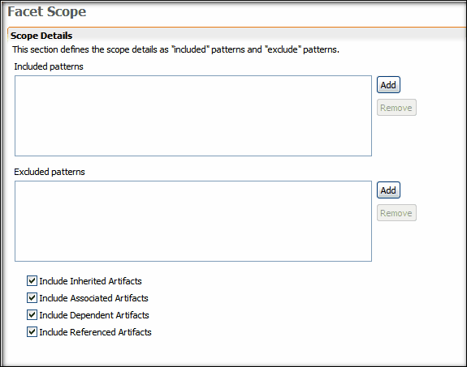

Defining the Facet Scope
After defining your Service Contract Facet you must define its scope. The Scope tab in your Facet Descriptor allows you to define what artifacts from your local project that you want to be included or excluded in the facet. You can include or exclude specific artifacts by specifying their fully-qualified name, or by using a wildcard notation, such a com.mycompany.* to include a complete package and its sub-packages.
To ensure that a facet contains all the necessary artifact definitions for generation, you have the option to include or exclude the following:
- Include Inherited Artifacts: Select this option to include inherited artifacts in your facet scope. Deselect this option to exclude inherited artifacts.
- Include Associated Artifacts: Select this option to include associated artifacts in your facet scope. Deselect this option to exclude associated artifacts.
- Include Dependent Artifacts: Select this option to include dependent artifacts in your facet scope. Deselect this option to exclude dependent artifacts.
- Include Referenced Artifacts: Select this option to include referenced artifacts in your facet scope. Deselect this option to exclude dependent artifacts.
Complete the following procedure to define the scope of your facet.
To define the scope
- Click the Scope tab. The Facet Scope perspective displays.

- Add the patterns to include in the facet scope.
- Add the patterns to exclude in the facet scope.
- By default, all of the Include Artifact options are selected. If desired, deselect the artifact option to exclude that option from the facet scope.
- Click Save to save your Service Contract Facet.
Related Topics
Defining a Service Contract Facet
Defining an Active Facet
Project Generation with Active Facets
Selecting Facets for Tigerstripe Projects
Merging Facets for Generation
 Defining an Active Facet
Defining an Active Facet
© copyright 2005, 2006, 2007 Cisco Systems, Inc. - All rights reserved